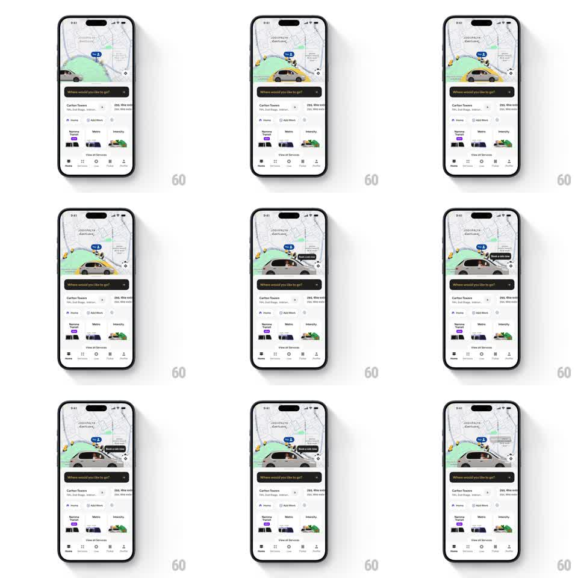

Media
Frame-by-frame

Rebuild this animation 1:1: Namma Yatri's home screen - a 3D cab illustration drives across the map area and a springy "Book a cab now" tooltip pops out above it.

Rebuild this animation 1:1: Namma Yatri's home screen - a 3D cab illustration drives across the map area and a springy "Book a cab now" tooltip pops out above it. ## Integration Integration: stack-agnostic spec - springs given as stiffness/damping, timed motions as duration + curve; map every value to your framework and animation library of choice. ## Scene Ride-hailing home: map top half (street grid, green pickup zone, driver pins, a blue ETA pill), dark "Where would you like to go?" search bar, saved-place card (Carlton Towers), Home/Add More chips, vehicle options row (Namma Yatri, Metro, Intercity), "View All Services" link, bottom tab bar. A 3D yellow-and-white cab model sits on the map. ## Motion spec Pattern: 3D object traversal + tooltip pop, ~3s loop. - Cab: the 3D cab glides from left to right across the map (3s, ease-in-out), rotating a few degrees with the path and casting a soft ground shadow; it loops back after a pause. - Tooltip: as the cab crosses mid-map, a dark pill tooltip "Book a cab now" pops in above it (spring scale 0.6 -> 1.08 -> 1, ~400ms, ~350/18) and tracks the cab's position, then pops out as the cab exits. - Map: pins and ETA pill stay fixed; a subtle map pan (4-6px) follows the cab. ## Calibration - The tooltip attaches to the cab, not the map - it moves with the model. - The pop spring is snappy but soft - no harsh bounce. ## Reduced motion Cab parked mid-map with the tooltip already visible; no traversal. ## Don't miss - The cab is a rendered 3D model with perspective and shadow, not a flat icon. - The map beneath stays fully interactive-looking; nothing else animates.